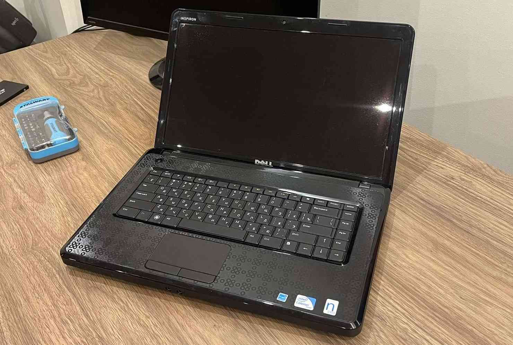
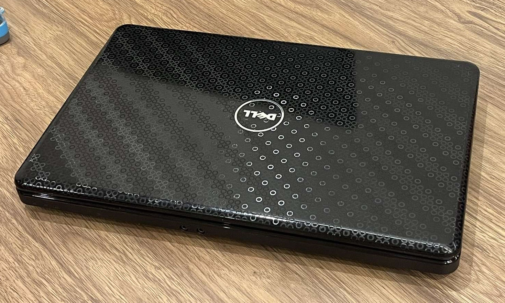

Linux instalācija: Debian
32-bitu sistēmas vēl var eksistēt!
32-bitu sistēmas vēl var eksistēt!
Vēlējos veikt īstu instalāciju, tāpēc turpinot sava vecā klēpjdatora funkciju atjaunināšanu un uzlabošanu, nolēmu to izmantot arī šim projektam, tādējādi dodot tam svaigu Linux OS, no kura pat varētu būt iespējams pieslēgties internetam bez problēmām. Neskatoties uz to, arī vēlējos atstāt Windows XP, tāpēc nolēmu izveidot MultiBoot uzstādījumu, lai varētu izmantot abus OS.
Bet kādu tieši Linux distribūciju instalēt? Sākumā domāju instalēt samērā sarežģīto, bet spēcīgo Arch Linux, bet pēc izpētes, izrādījās ka tā vairs neatbalsta 32-bitu sistēmas, kas ir viena no mana klēpjdatora limitācijām. Ir arī pieejama neoficiālā 32-bitu versija, ArchLinux32, bet vēlējos oficiāli atbalstītu un samērā izplatītu distribūciju.
Tāpēc, izvēlējos Debian 12, kas nav pati jaunākā versija (tagad ir arī pieejama Debian 13), taču tai līdz šim ir oficiāls atbalsts, tā atbalsta 32-bitu sistēmas, un tā ir arī plaši izplatīta. Vēl viens no plusiem šai OS bija tas, ka, instalācijas laikā, varēja izvēlēties darbvirsmas vidi, ko vēlas instalēt uz sistēmas.
Zemāk ir neliels atkārtojums no pagājušā projekta: visa tā pati informācija par klēpjdatoru uz kura instalēju arī Windows XP.
Izlaists nedaudz pirms 2010. gada septembra, šis klēpjdators jau tajā laikā nebija pats spēcīgākais. Tomēr, domāju, ka augsti personalizējamais Linux ļautu man arī dažados veidos uzlabot lietotāja pieredzi, un, cerams, uzlabot tā ātrumu. Sakarā ar to, ka, pirmstam, jau biju uzlicis SSD, instalācijai arī nebūtu jābut ilgai. Šīs ir datora specifikācijas:
| Detaļa | Modelis |
|---|---|
| Procesors | Intel Celeron 900 (32-bitu!) |
| Iebūvētās grafikas procesors | Intel GMA 4500MHD |
| RAM | 2 GB, DDR3 1333MHz |
| Displejs | 15.6 collas, 1366×768 izšķirtspēja |
| Cietais disks | 256 GB GIGABYTE SATA SSD |
| Bezvadu pieslēgums | Athernos Wireless-N 802.11n Mini-Card |
| Dell Wireless 365 Bluetooth 2.1 Internal Card | |
| Porti un pieslēgumi | DVD RW diskdzinis |
| 3 USB 2.0 porti | |
| VGA displeja ports | |
| Audio porti | |
| Atmiņas karšu lasītājs | |
| Papildus | Iebūvēta webkamera |
| Baterija | 48Wh |
| Operētājsistēma (oriģinālā) | Windows 7 |




Jebkura OS instalācija vajadzīgs instalācijas datu nesējs, no kura iegut OS failus. Lai izveidotu instalācijas datu nesēju, jāpiemeklē 3 lietas: USB datu nesējs, OS ISO attēls, kā arī programma, kas uzstādīs attēlu uz datu nesēja.
Vieglākā daļa - datu nesējs. Izmantoju to pašu 16GB SanDisk datu nesēju. (bildītes var skrullēt!)
Debian 12 ISO attēlu nebija viegli atrast, jo tā nav pati jaunākā versija, un arī nav viena no atbalstītajām procesoru arhitektūrām. Tomēr, pēc nepareizā OS instalācijas sākšanas (Debian 12 Edu), atradu īsto attēlu, un to lejupielādēju.
Pēdējā lieta, kas vajadzīga, ir attiecīgā programma instalācijas nesēja izveidošanai. Viena no ērtākajām programmām, ar kuru esmu saskāries ir BalenaEtcher, kas šoreiz bez problēmām uzstādīja attēlu uz zibatmiņas.
Lai izveidotu MultiBoot uzstādijumu, uz datora diska jābūt vairākiem nodalījumiem (partitions), taču instalējot Windows XP nebiju paredzējis, ka tā darīšu, un izveidoju tikai vienu nodalījumu, kurā arī instalēju Windows XP.
Vienīgā mana opcija lai šo izlabotu, bija izveidot vēl vienu datu nesēju ar speciālu nodaļu rediģēšanas sistēmas instalāciju, kuru nevajag instalēt uz iekšējā diska un var palaist ārpus OS. Ar to es varētu samazināt Windows nodalījuma lielumu, jo citādi to nav iespējams izdarīt no Windows.
Atkārtoju tos pašus soļus, kā veidojot OS instalācijas nesēju, tikai ar GParted live OS attēlu. Šai aplikācijai arī vajadzēja 32-bitu versiju, bet tā vēl ir pieejama oficiālajā mājaslapā.
Izvēloties GParted kā boot device, veicu 3 soļus: samazināju Windows nodalījumu uz 62.5GB, izveidoju 4GB swap nodalījumu Linuxam, un visu atlikušo diska daļu (157GB) atvēlēju Debian.


Datora ieslēgšanas laikā iestatot USB datu nesēju kā boot device, dators ielādējas Debian instalētājā. Izvēlējos grafisko instalēšanas veidu jo vēl nebiju gluži gatavs visu darīt caur komandu līniju.
Pēc tā, iestatīju valodu, reģionu, tastatūras izvietojumu, utt.
Pēc neilgas gaidīšanas Debian vēlējās lai es izvēlos tīkla karti, un pēc tā, pievienojos savam Wi-Fi.
Tālāk, iestatīju datora nosaukumu, administratora paroli, kā arī sava profila vārdu, lietotājvārdu un paroli. Svarīgi pamanīt to, ka ievadīju nepareizo lietotājvārdu pēc mājasdarba kritērijiem, tāpēc tas būs vēlāk jāpārmaina. 😪


Instalāciju pabeidzot, Windows sagaida lietotāju un piedāvā ieslēgt automātiskos atjauninājumus.
Tad es vēlreiz ievadu savu lietotājvārdu un pabeidzu instalāciju.
Beidzot ir laiks izmantot pašu operētājsistēmu!
Draiverus visus lejupielādēju no Dell mājaslapas palīdzības sadaļas, kur, brīnumainā kārtā, tie bija pieejami šim datoram. Instalācija draiveriem gāja perfekti, izņemot grafikas draiveri, kurš sūdzējās par Windows versiju.
Tomēr sanāca atrast no kādas mājaslapas draiveri Intel GMA 4500MHD tieši 32-bitu Windows XP, un to instalējot, sanāca uzstādīt pilnīgi visu datorā.
Pēc Microsoft .NET Framework 3.5 SP1 instalēšanas (pēdējā, kas pieejama uz XP) sanāca arī izmantot Intel grafiku iestatījumu paneli.
Vienīgi nolēmu neinstalēt BIOS atjauninājumos, jo nevēlējos kaut kādā veidā pilnībā iznīcināt datoru.
Pirmkārt, vajadzēja uzstādīt un pārbaudīt dažādas tastatūras valodas. To darīju Notepad, un uzrakstīju pāris teikumus latviski, angliski un vāciski.
Tālāk, vajadzēja pārbaudīt OS atjauninājumus un tos uzstādīt, bet sakarā ar to, ka Windows XP atbalsts beidzās 2014. gada 8. aprīlī, un pēdējais drošības atjauninājums tika izlaist 2019. gada 14. maijā, jauni atjauninājumi nebija pieejami.
Pēc tā, nomainīju fona attēlu, samainīju krāsu shēmu un nomainīju dažas noklusējuma ikonas.
Nākamais solis: biroja programmatūras uzstādīšana. Izvēlējos LibreOffice no iepriekšējas pieredzes, kā arī tās bezmaksas statusa dēļ. Pēdējā atbalstītā versija Windows XP ir 5.4.7.2.
Viena no svarīgākajām lietām uz jebkura datora - pārlūkprogramma, tāpēc uzstādīju divas: Opera un Mozilla Firefox. Versijas skatīt šeit.
Audio un video atskaņošanai uzstādiju VLC audio un video atskaņotāju. Kaut gan VLC mājaslapā rakstīts, ka līdz pat šim brīdim tiek atbalstīts Windows XP, tā atbalsts nedarbojas jau vairākus atjauninājumus, tāpēc instalēju vecāku versiju.
Attēlu apstrādei vēlējos instalēt paint.net, jo, pēc pieredzes, tā ir funkcionālākais un prastākais uzlabojums MS Paint, taču kompānija nepublicē vecas versijas savā arhīvā. Tāpēc instalēju GIMP, kuram ir pieejamas vecas versijas arhīvā. Vairāk par versiju šeit.
Diemžēl, nevienu videokonferenču programmu nevarēju uzstādīt. Pēdējais Zoom instalētājs uz XP atverās un aizveras bez kļūdas paziņojuma, Skype vispār ir beidzis darbību, Google Meet nav pieejams, jo pārlūkprogramma ir pārāk veca, bet MS Teams strādā tikai sākot no Windows 10.
Koda redaktoram vēlējos instalēt Code::Blocks, bet tas diemžēl nesanāca, tāpēc uzstādīju Notepad++. Vairāk par versiju šeit.
Viens no nosacījumiem bija uzstādīt spēli ārpus Program Files mapes, un to palaist un spēlēt.
Mana mīļākā spēle bērnībā uz ģimenes datora bija Neverhood, stop-motion point-and-click spēle, kas tika oriģināli izveidota priekš Windows 95. Tās disks man vēl līdz šim stāv plauktā, tāpēc ātri pārsūtīju failus uz datoru.
Spēles instalētājs vienmēr nestrādāja korekti uz XP (ļoti iespējams, ka bija kompilēts ar citu teksta enkodēšanu), tāpēc arī šoreiz vajadzēja spiest pogas, līdz sanāk kaut ko izdarīt. Viena no pogām nezināma iemesla pēc pat uzreiz restartēja datoru neinstalējot spēli.
Spēli uzstādīju jaunā mapē ar lokāciju C:/Games/Neverhood/. Tā darbojās tieši kā paredzēta, bez problēmām.
Viens no nosacījumiem bija demonstrēt programmu - rezidentu sarakstu. Uztvēru to kā procesu sarakstu Task Manager aplikācijā.
Nākamais bija palaist diska defragmentāciju. (kaut gan SSD nevajadzētu defragmentēt) To izdarīju un restratēju datoru, kā pieprasīja OS.
Pirmspēdējais nosacījums bija ieslēgt Windows Safe Mode režīmā. To izdarīju restartējot datoru un spiežot F8 taustiņu, un tad izvēloties Safe Mode. Šajā režīmā ir noņemtas Startup aplikācijas, un izslēgtas daudzas funkcionalitātes, lai varētu droši diagnosticēt sistēmu.
Visbeidzot, vajadzēja izmainīt Page File konfigurāciju. Es to vienkārši izslēdzu, jo negribēju aizņemt vairāk vietas ar to uz SSD.
Kopumā esmu ļoti apmierināts ar to, kas man sanāca, kā arī esmu priecīgs, ka man sanāca interesantā veidā izkārtot visus attēlus un informāciju. (jo īpaši papildus informācijas linkus). Paldies par lasīšanu!